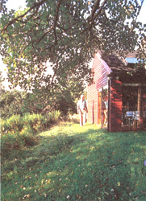

WALTER CHOROSZEWSKI
A walk around the house: This is the back of the house where the the lawn is only four feet wide. The branches framing the top of the picture are from a tree we planted almost 30 years ago. It is shading the south and west facing windows and the skylight.